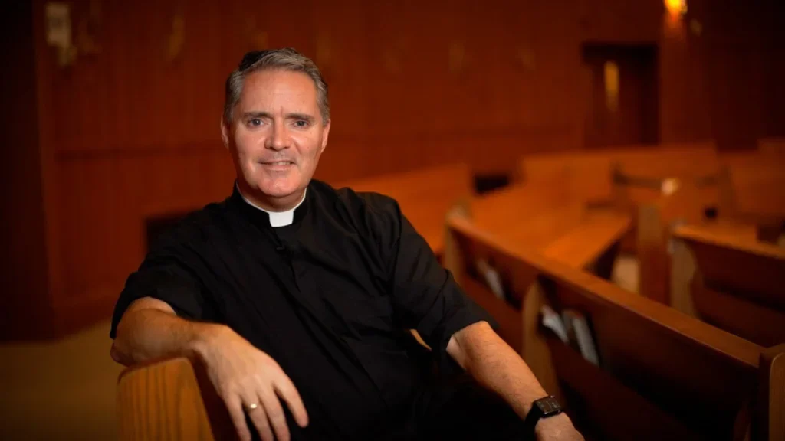
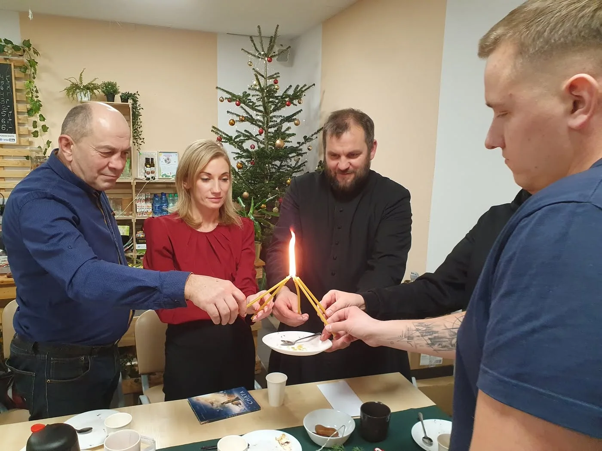
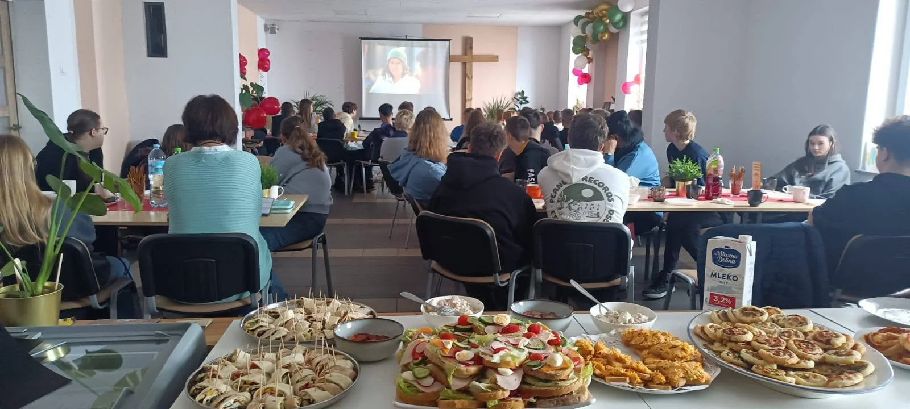

Pierwsza Alpha
Zaczynamy od zaproszenia
Parafia chce ewangelizować i coś zmienić. Zaprasza więc osoby poszukujące na prostą drogę: posiłek, film i rozmowę. Pierwszym doświadczeniem gościa jest gościnność — bezpieczne miejsce na pytania i relację.
Odnowa parafii
Prosty format spotkania może otworzyć dłuższą drogę: odkrywanie wiary, wejście do ekipy, odpowiedzialność i zapraszanie kolejnych osób.
Cykl Bożej renowacji
Przewijaj stronę. Zobaczysz, jak uczestnik odkrywa wiarę, uczy się posługiwać, dojrzewa do przywództwa i pomaga parafii ponownie wychodzić do nowych osób.
Chcemy ewangelizować i docierać do ludzi, którzy są poza Kościołem albo szukają drogi powrotu.
Pierwsza Alpha
Parafia chce ewangelizować i coś zmienić. Zaprasza więc osoby poszukujące na prostą drogę: posiłek, film i rozmowę. Pierwszym doświadczeniem gościa jest gościnność — bezpieczne miejsce na pytania i relację.
Uczestnik → wierzący
Przez kolejne spotkania może odkryć wiarę i doświadczyć osobistego spotkania z Jezusem. Nie jest już tylko uczestnikiem wydarzenia. Zaczyna żyć jako osoba wierząca.
Wierzący → posługujący
Podczas następnej edycji uczy się służyć innym: przygotowuje miejsce, troszczy się o gości, słucha i pomaga prowadzić rozmowę. Wiara przechodzi w konkretną posługę.
Posługujący → lider
Pierwsza, druga i trzecia posługa dają doświadczenie. Posługujący zaczyna prowadzić innych, zostaje gospodarzem lub koordynatorem i pomaga przygotować kolejnych liderów.
Liderzy → kultura parafii
Nowi liderzy uruchamiają następne edycje i nowe dzieła. Parafia nie organizuje już tylko pojedynczego wydarzenia — regularnie wychodzi do osób poszukujących. Koło zaczyna kolejny obrót.

Jeśli ewangelizacja jest na pierwszym miejscu w parafii, to wszystko jest na właściwym.
ks. James Mallon
Dlaczego to działa?
Kolejna edycja daje uczestnikom możliwość wejścia do ekipy jako pomocnicy. Uczą się słuchać, troszczyć o gości i budować atmosferę. Z czasem część z nich podejmuje rolę gospodarza lub koordynatora.
W ten sposób Alpha nie kończy się na jedenastu spotkaniach. Może stać się środowiskiem, w którym dojrzewają nowi posługujący i liderzy.

Etapy rozwoju
Nie trzeba przeskakiwać etapów. Ważniejsze są regularność, uczenie się i stopniowe przekazywanie odpowiedzialności.
Szkolenie, udział w istniejącej edycji, własna edycja ucząca i pierwszy publiczny start.
Kolejne edycje, budowanie ekipy oraz pierwszych gospodarzy i liderów.
Regularność, nowe grupy i konteksty, takie jak młodzież, małżeństwa lub rodzice.
Dojrzały zespół zaczyna wspierać nowe miejsca i dzielić się swoim doświadczeniem.

Więcej niż jeden program
Kiedy nowe osoby odkrywają wiarę, wchodzą do służby i dojrzewają do odpowiedzialności, powstają także kolejne inicjatywy. W Lubecku obok Alpha rozwijały się między innymi działania dla młodzieży, kawiarenka i inne formy spotkania.